<div class="container earthandbeyond"><div id="contents" class="col-md-12 main-content"><span  class="ch-nr-3"/>
        <div  class="section"><h1 class="title" id="toc-id-0">Geskiedkundige ontwikkeling van sterrekunde</h1><div class="teachers-guide">
<p/>

<p><strong>Hoofstukoorsig</strong></p>

<p>2 weke</p>

<p>Hierdie hoofstuk bied 'n oorsig van die sleutelontdekkings in die wetenskap wat gelei het tot ons huidige begrip van die sonnestelsel en die heelal in die algemeen. Die eerste deel van die hoofstuk dek vroe&#235; inheemse kennis en fokus hoofsaaklik op Suid-Afrikaanse sterreleer. Die tweede helfte van die hoofstuk som die sleutelontdekkings in sterrekunde op wat tydens die wetenskaplike revolusie in Europa gemaak is en wat noodsaaklik was om ons begrip te verruim.</p>

<p>Die hoofdoelwitte van hierdie hoofstuk is om te sorg dat leerders die volgende verstaan:</p>
<ul data-class="ListBulleted"><li>Vroe&#235;re kulture het opgelet dat die sterre patrone, bekend as konstellasies, in die hemelruim vorm. Daar is talle stories en mites hieroor wat van geslag tot geslag oorgedra is. </li>
<li>Vroe&#235;re kulture het die sterre en konstellasies gebruik om tyd te bepaal, rigting te vind en belangrike godsdienstige gebeure aan te dui.</li>
<li>In meer onlangse tye het sterrekundiges die bewegings van die sterre en planete probeer verklaar aan die hand van 'n fisiese model van die sonnestelsel.  </li>
<li>Copernicus het reeds in 1543 verklaar dat ons sonnestelsel 'n songesentreerde model is. Destyds was die algemeen aanvaarde model, hoewel verkeerd, dat dit aardegesentreerd is.   </li>
<li>Johannes Kepler het ontdek dat die planete in ellipse eerder as in sirkels om die Son wentel.</li>
<li>Galileo was die eerste persoon wat 'n teleskoop gebruik het om die sterre en planete te bestudeer. Hy het talle belangrike ontdekkings met behulp van sy teleskoop gemaak. </li>
<li>Newton het later, aan die hand van sy gravitasieteorie, verduidelik waarom planete om die Son wentel.</li>
</ul><p>Die onderafdeling oor <em>Eietydse ontdekkings</em> word ingesluit as uitbreiding van hierdie hoofstuk om meer onlangse opwindende ontdekkings in sterrekunde uit te lig. Die oogmerk is om leerders bewus te maak van huidige navorsing in sterrekunde en te toon dat wetenskaplike ontdekkings nog steeds gemaak word.</p>

<p>Jy kan 'n oopbronprogram, genaamd Stellarium, aflaai om intydse foto-realistiese beelde in 3D te kry. Dit toon sterre, konstellasies, planete,  nebulae (newelwolke) en ander dinge soos die grond, landskap en atmosfeer. Jy kan hierdie sagteware in jou klaskamer gebruik om van die konsepte in di&#233; hoofstuk te demonstreer, soos die konstellasies en beweging van planete. <a data-class="ExternalLink" href="http://bit.ly/1bHFb4d">bit.ly/1bHFb4d</a></p>

<p>3.1 Vroe&#235; inheemse kennis (3 uur)</p>
<table><tr><td><p><strong>Take</strong></p></td><td><p><strong>Vaardighede</strong></p></td><td><p><strong>Aanbeveling</strong></p></td></tr><tr><td><p>Aktiwiteit: Die tradisionele en moderne Xhosa-kalender</p></td><td><p>Skryfwerk</p></td><td><p>KABV-voorstel</p></td></tr><tr><td><p>Aktiwiteit: Klasbespreking oor verskillende kalenders</p></td><td><p>Bespreking, kommunikasie</p></td><td><p>KABV-voorstel</p></td></tr><tr><td><p>Aktiwiteit: Skep jou eie legende</p></td><td><p>Tekenwerk, skryfwerk</p></td><td><p>Voorstel</p></td></tr></table><p>3.2 Eietydse ontdekkings (3 uur)</p>
<table><tr><td><p><strong>Take</strong></p></td><td><p><strong>Vaardighede</strong></p></td><td><p><strong>Aanbeveling</strong></p></td></tr><tr><td><p>Aktiwiteit: Verduidelik die bewegings van Mars</p></td><td><p>Tekenwerk, waarneming, analise</p></td><td><p>Voorstel</p></td></tr><tr><td><p>Aktiwiteit: Onderhoud met 'n revolusion&#234;r</p></td><td><p>Werk in pare, navorsing, beskrywing, analise (skryfwerk - uitbreidingsoefening)</p></td><td><p>Voorstel</p></td></tr><tr><td><p>Aktiwiteit: Doen navorsing oor 'n nuwe ontdekking, uitvinding of wetenskaplike</p></td><td><p>Navorsing, beskrywing, skryfwerk</p></td><td><p>KABV-voorstel</p></td></tr><tr><td><p>Aktiwiteit: Eietydse sterrekundiges: toets jou kennis</p></td><td><p>Verkry toegang tot en herroep inligting, kommunikeer op skriftelike, mondelinge of grafiese wyse</p></td><td><p>Opsioneel</p></td></tr></table><p/>
</div><div class="note col-md-10" data-type="keyquestions"><ul data-class="ListBulleted"><li>Hoe het vroe&#235; sterrekundiges die bewegings van die Son, Maan en sterre gebruik om tyd aan te dui?</li>
<li>Hoe het vroe&#235; sterrekundiges ons plek in die sonnestelsel gesien?</li>
<li>Hoekom het Copernicus gereken die Aarde en planete beweeg rondom die Son?</li>
<li>Watter ontdekkings het Galileo met behulp van sy teleskoop gemaak?</li>
<li>Hoe het Newton Kepler se waarnemings verklaar?</li>
</ul></div><div class="section"><h2 class="title" id="toc-id-1">Vroe&#235; inheemse kennis</h2><div class="teachers-guide">
<p/>

<p>In di&#233; gedeelte ontdek leerders hoe antieke beskawings die sterre beskou het en stories oor die sterre vertel het wat van een geslag na die volgende oorgedra is. Hulle leer ook oor die praktiese gebruik van sterre vir navigasie en tydsbepaling. Spesiale klem word gel&#234; op inheemse kennis wat met Suid-Afrika verband hou, maar daar word tog ook w&#234;reldwye vergelykings getref.</p>

<p/>
</div><div class="note col-md-6" data-type="newwords"><ul data-class="ListBulleted"><li>maankalender</li>
<li>sonkalender</li>
<li>konstellasie</li>
<li>sterreleer</li>
</ul></div>
<p>Sterrekunde is een van die oudste wetenskappe. Ou beskawings regoor die w&#234;reld het die naghemel bestudeer en patrone in die hemelruim waargeneem. Hierdie patrone word konstellasies genoem. 'n Konstellasie is enige groep sterre wat, as dit vanaf die Aarde waargeneem word, o&#235;nskynlik 'n patroon of beeld in die lug vorm. Verskillende nasies, kulture en mense het verskillende name vir die onderskeie sterpatrone gehad en dit ook op verskillende maniere ge&#239;nterpreteer.</p>

<p>'n Bekende voorbeeld is die Suiderkruis. Bestudeer die foto's van hierdie sterre in die naghemel en kyk hoe jy die patroon van die kruis  kan uitken.</p>
<figure><figcaption class="caption">Ons noem hierdie sterrebeeld die Suiderkruis.</figcaption></figure><figure>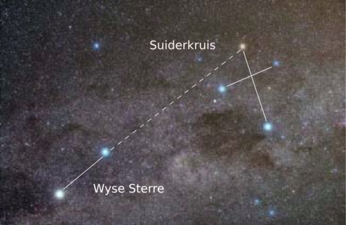<figcaption class="caption">Die wit lyne wys hoe om die Suiderkruis te identifiseer.</figcaption></figure><div class="note col-md-6" data-type="takenote">
<p>Met die Suiderkruiskonstellasie kan ons bepaal waar suid is. Verleng net die lang as van die kruis vier maal en gaan dan regaf na die horison om suid te kry.</p>
</div>
<p>Die Suiderkruis, <em>Crux</em>, en die twee helder wysers daarvan het vir boere die begin van die plantseisoen aangedui. Volgens Sotho-, Tswana- en Venda-tradisies is hierdie sterre <em>Dithutlwa</em>, genoem, wat "Die kameelperde"  beteken. Die helder sterre van <em>Crux</em> is kameelperdbulle en die twee wysers kameelperdkoeie.</p>

<p>Nog 'n voorbeeld is die Orion-konstellasie. Dit is vernoem na Orion, 'n bonatuurlike sterk jagter in die Griekse mitologie. Dit is een van die bekendste konstellasies die w&#234;reld oor en baie kulture het daarmee ge&#239;dentifiseer en hul eie mites daaroor geskep, meestal rondom 'n sterk man of jagter.</p>
<figure><figcaption class="caption">Die Orion-konstellasie, hier gesien met die drie helder sterre in die middel wat Orion se gordel vorm, en die vier sterre in elke hoek. </figcaption></figure><figure>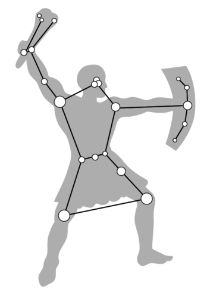<figcaption class="caption">Hierdie skets wys hoe die sterpatrone van Orion die buitelyne van die jagter vorm.</figcaption></figure><div class="note col-md-6" data-type="didyouknow">
<p>Die naam planeet kom van die Griekse woord <em>planetes</em> wat swerwer beteken. Die antieke Grieke het die planete swerwers genoem omdat hulle in verhouding tot die sterre in die agtergrond oor die hemelruim beweeg.</p>
</div>
<p>Mense het ook opgelet dat die beweging van die sterre en planete oor die hemelruim op 'n bepaalde tydsverloop dui. Vroe&#235; kulture het dikwels die sterre en planete wat hulle in die naghemel gesien het, met gode, geeste of diere ge&#239;dentifiseer. Van die vroegste sterrekundiges het tussen sterre en planete onderskei, omdat die relatiewe posisie van die sterre vas bly in die hemelruim terwyl die planete o&#235;nskynlik rondbeweeg in verhouding tot die sterre in die agtergrond. Nie al die planete was aan antieke mense bekend nie, slegs Mercurius, Venus, Mars, Jupiter en Saturnus. Uranus en Neptunus is eers ontdek n&#225; die uitvinding van teleskope.</p>
<div class="note col-md-6" data-type="didyouknow">
<p>Ons het sewe dae in die week weens die sewe bewegende hemelliggame wat aan vroe&#235; mense bekend was, naamlik die Son, die Maan, Mercurius, Venus, Mars, Jupiter en Saturnus.</p>
</div>
<p>Baie van die konstellasies wat sterrekundiges vandag nog in die Weste gebruik, was reeds bekend by antieke beskawings soos die Sumeri&#235;rs, Babiloni&#235;rs en Egiptenare.</p>
<figure>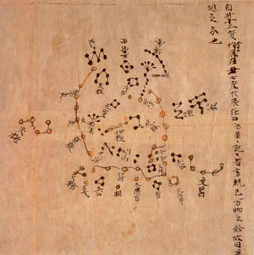<figcaption class="caption">Die Dunhuang-sterrekaart van die Tang-dinastie in China (ongeveer 700 AD) met sommige van die konstellasies wat hulle ge&#239;dentifiseer het.</figcaption></figure><div class="note col-md-6" data-type="visit">
<p>Lees meer oor Chinese sterrekunde.<a data-class="ExternalLink" href="http://bit.ly/19BmxGp">bit.ly/19BmxGp</a></p>
</div>
<p>Kennis van di&#233; konstellasies is oorgedra en uitgebrei deur latere beskawings soos die antieke Grieke, Romeine en Arabiere. Inheemse Amerikaners, die Aborigines van Australi&#235;, die Majas, Asteke, Polinesi&#235;rs asook antieke Chinese en Japannese het baie belanggestel in die sterre en het hul eie konstellasies en stories oor die sterre gehad.</p>
<div class="note col-md-6" data-type="visit">
<p>Ancient Egyptian Astronomy (video)<a data-class="ExternalLink" href="http://bit.ly/1bHFeNo">bit.ly/1bHFeNo</a></p>
</div>
<p>Sterrekunde het destyds 'n belangrike rol in godsdiens gespeel, en die datums van feeste en heilige dae is bepaal deur die opstelling van die sterre of die fase van die Maan. Trouens, die antieke Egiptiese en Maja-piramides en tempels is s&#243; ontwerp dat die Son, Maan, sterre en planete op belangrike tye van die jaar, soos die sonstilstande of dag-en-nageweninge, sigbaar sou wees van bo af of deur sekere vensters.</p>
<figure><figcaption class="caption">Die drie Groot Piramides van Giza.</figcaption></figure><div class="note col-md-6" data-type="didyouknow">
<p>Sommige mense is van mening dat die bouers van die antieke piramides van Giza in Egipte hulle s&#243; geplaas het dat dit vanuit die ruimte sal lyk soos die drie "gordelsterre" van die Orion-konstellasie vanaf die Aarde lyk.</p>
</div>
<p>Hier in Suid-Afrika het vroe&#235; kulture ook hul eie konstellasies en stories gehad wat van een geslag na die volgende oorgedra is.</p>

<p>Vroe&#235;re kulture het die sterre vir navigasie gebruik. Wanneer hulle na nuwe streke gereis of op water gevaar het, kon hulle nie bekende bakens gebruik nie. Vanuit 'n bepaalde posisie  beskou, kom 'n ster altyd op en gaan onder in dieselfde rigting, en volg dit dieselfde baan oor die hemelruim. Ons is vertroud met di&#233; konsep, aangesien die Son 'n ster is en ons dit elke dag in dieselfde rigting sien opkom en ondergaan. Vroe&#235; navigators het geleer om die rigting van opkomende en ondergaande sterre te gebruik om koers te bepaal.</p>
<figure>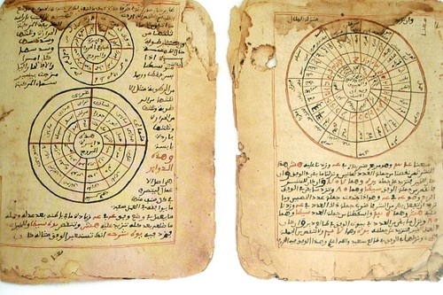<figcaption class="caption">Antieke manuskripte van Timboektoe in Mali, Sentraal-Afrika, wat sterrekundige waarnemings dokumenteer.</figcaption></figure><p>Vroe&#235; kulture het ook die waargenome verandering in die hemelruim gebruik om tydsverloop te bepaal. 'n Dag was die tyd tussen een sonsopkoms en die volgende, net soos in ons tyd. Die Maan se gereelde fases was 'n baie gerieflike "horlosie", en die tydsverloop tussen een nuwemaan en die volgende het die basis gevorm vir baie van die oudste kalenders.</p>
<div class="note col-md-6" data-type="takenote">
<p>In 'n <em>maankalender</em> word die tyd van  nuwemaan tot nuwemaan 'n <em>sinodiese maand</em> genoem en dit duur 29.5 dae.</p>
</div>
<p>Die maansiklus was nuttig omdat dit voorspelbaar was, net soos dag en nag. Tog het elke maansiklus met 'n effens ander seisoen met sy eie naam en aktiwiteite verband gehou. Daar is kerfstokke, gemaak van been en met kepies ingesny, gevind wat terugdateer tot tussen 20-30 000 jaar gelede, wat vermoedelik die fases van die Maan aangedui het. Ons gebruik vandag 'n <strong>sonkalender</strong>, 'n kalender waarin 'n jaar omskryf word deur die volledige omwenteling van die Aarde om die Son, hoewel sommige godsdienstige kalenders steeds 'n maankalender gebruik. Akkurate tydhou was veral vir boerderygemeenskappe belangrik, omdat mense moes weet wanneer om nuwe gewasse te plant en te oes.</p>
<figure><figcaption class="caption">Die Lebombo-been is in die 1970's in die Lebomboberge tussen Suid-Afrika en Swaziland ontdek. Dit is 'n been van 'n bobbejaan wat as kerfstok gebruik is, en is ongeveer 35 000 jaar oud. Dit is vermoedelik gebruik om tred te hou met maansiklusse, soos aangedui deur die 29 kepies daarop. </figcaption></figure><p>Die <em>Pleiades</em>, ook bekend as die <em>Sewester,</em> is 'n helder sterswerm. Tradisionele boerderygemeenskappe in Suid-Afrika het die Pleiades gebruik om te weet wanneer om te plant. Sodra die konstellasie vroegoggend in Junie sigbaar was, het hulle geweet dit is planttyd vir hul gewasse. Die Khoikhoi het die Pleiades <em>Khuseti</em> of <em>Khunuseh</em> genoem, wat 're&#235;nsterre'  beteken. In Sotho en Tswana word dit <em>Selemela</em> genoem, <em>Shirimela</em> in Tsonga, <em>Tshilimela</em> in Venda, en <em>isiLimela</em> in Xhosa en Zulu. Die Xhosas noem hierdie sterre ook die "spit-sterre". In Oos-Afrika en Zanzibar staan die Pleiades bekend as die <em>Kilimia</em>, wat ook "ploeg-sterre"  of "spit-
sterre"  beteken. Die Pleiades is nie net in Afrika gebruik om die begin van die plantseisoen aan te dui nie, maar vir die antieke Majas in Mexiko en Sentraal-Amerika was dit ook die begin van hul re&#235;nseisoen.</p>
<figure>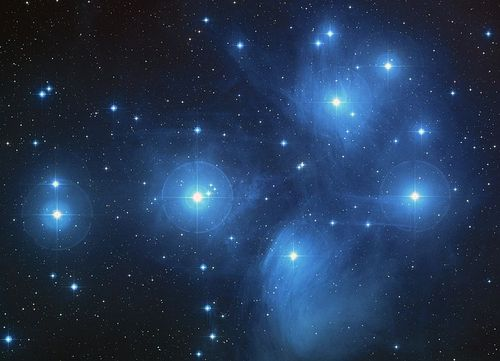<figcaption class="caption">Die Pleiades of Sewester-sterswerm. Hoewel die konstellasie die Sewester (soms ook Sewe Susters) genoem word, bevat hierdie sterswerm honderde sterre. Tog is net sowat sewe maklik sigbaar vir die menslike oog. </figcaption></figure><div class="note col-md-6" data-type="visit">
<p>Lees meer oor tradisionele Afrika-sterreleer.<a data-class="ExternalLink" href="http://bit.ly/1dL83Xl">bit.ly/1dL83Xl</a></p>
</div><div class="activity" data-type="Activity"><h1 class="title">Die tradisionele en moderne Xhosa-kalender</h1>
<p>In Xhosa is daar twee maniere om die maande te benoem, die moderne en die tradisionele manier. Waar die moderne name van die maande in stedelike gebiede gebruik word, word die ou name steeds in landelike gebiede, in die digkuns, en veral in die Oos-Kaap gebruik. Die volgende tabel toon hierdie name.</p>
<div class="note col-md-6" data-type="takenote">
<p>Jy hoef nie die name van die maande in Xhosa te ken nie. Hierdie aktiwiteit is bloot vir die interessantheid.</p>
</div><table><tr><td><p><strong>Afrikaans</strong></p></td><td><p><strong>Moderne Xhosa</strong></p></td><td><p><strong>Tradisionele Xhosa</strong></p></td><td><p><strong>Betekenis van tradisionele naam</strong></p></td></tr><tr><td><p>Januarie</p></td><td><p>uJanuwari</p></td><td><p>EyoMqungu</p></td><td><p>maand van die tamboekiegras</p></td></tr><tr><td><p>Februarie</p></td><td><p>uFebhuwari</p></td><td><p>EyoMdumba</p></td><td><p>maand van die uitswellende graan</p></td></tr><tr><td><p>Maart</p></td><td><p>uMatshi</p></td><td><p>EyoKwindla</p></td><td><p>maand van die eerste vrugte</p></td></tr><tr><td><p>April</p></td><td><p>uApreli</p></td><td><p>UTshazimpuzi</p></td><td><p>maand van die verdroogde pampoene</p></td></tr><tr><td><p>Mei</p></td><td><p>uMeyi</p></td><td><p>UCanzibe</p></td><td><p>maand van Canopus, 'n ster in die konstellasie van Argo</p></td></tr><tr><td><p>Junie</p></td><td><p>uJuni</p></td><td><p>Isilimela</p></td><td><p>maand van die Pleiades</p></td></tr><tr><td><p>Julie</p></td><td><p>uJulayi</p></td><td><p>EyeKhala / EyeNtlaba</p></td><td><p>maand van die aalwyne</p></td></tr><tr><td><p>Augustus</p></td><td><p>uAgasti</p></td><td><p>EyeThupha</p></td><td><p>maand van die bloeisels</p></td></tr><tr><td><p>September</p></td><td><p>uSeptemba</p></td><td><p>EyoMsintsi</p></td><td><p>maand van die kuskoraalboom</p></td></tr><tr><td><p>Oktober</p></td><td><p>uOktobha</p></td><td><p>EyeDwarha</p></td><td><p>maand van die waterlelieblaar</p></td></tr><tr><td><p>November</p></td><td><p>uNovemba</p></td><td><p>EyeNkanga</p></td><td><p>maand van die klein geel madeliefies</p></td></tr><tr><td><p>Desember</p></td><td><p>uDisemba</p></td><td><p>EyoMnga</p></td><td><p>maand van die soetdoring en Simba (die leeu)</p></td></tr></table><p><strong>VRAE:</strong></p>
<div class="exercises"><div class="problemset"><div class="entry"><div class="problem">
          
<p/>

<p>Sien jy dat die moderne Xhosa-name afgelei is van die Afrikaanse en Engelse name? Die tradisionele name vir die maande is meestal afkomstig van die name van plante en blomme. Hoekom, dink jy, het sekere maande spesifieke plant- of blomname?</p>

        
<p/><hr/><hr/></div><div class="solution">
<p/><p/>

        
<p>Dit stem ooreen met wanneer hierdie plante blom of groei soos die seisoene in die loop van die jaar verander.</p>

        
<p/>
</div></div><div class="entry"><div class="problem">
          
<p/>

<p>Hoekom, dink jy, word Augustus <em>EyeThupha</em>, die maand van die bloeisels genoem?</p>

        
<p/><hr/><hr/></div><div class="solution">
<p/><p/>

        
<p>Omdat dit die begin van die lente aandui wanneer bloeisels oral op plante verskyn.</p>

        
<p/>
</div></div><div class="entry"><div class="problem">
          
<p/>

<p>Waarom word Junie <em>Isilimela</em> genoem? Wenk: Lees die voorafgaande teks in jou werkboek.</p>

        
<p/><hr/><hr/></div><div class="solution">
<p/><p/>

        
<p>Isilimela beteken 'maand van die Pleiades'. Die Pleiades is die groep van sewe sterre wat in Junie in die hemelruim verskyn.</p>

        
<p/>
</div></div><div class="entry"><div class="problem">
          
<p/>

<p>Met watter tyd van die jaar val <em>Isilimela</em> saam? Waarop het dit vir tradisionele boere gedui?</p>

        
<p/><hr/><hr/></div><div class="solution">
<p/><p/>

        
<p>Dit val saam met die winter wanneer boere hul gewasse moet aanplant sodat dit gereed is om somertyd te oes.</p>

        
<p/>
</div></div><div class="entry"><div class="problem">
          
<p/>

<p>In watter maand is jy gebore? Skryf die tradisionele Xhosa-naam onderaan.</p>

        
<p/><hr/></div><div class="solution">
<p/><p/>

        
<p>Leerder-afhanklike antwoord.</p>

        
<p/>
</div></div></div></div>

<p/>
</div>
<div class="activity" data-type="Activity"><h1 class="title">Klasbespreking oor verskillende kalenders</h1><div class="teachers-guide">
<p/>

<p>Herinner leerders aan die re&#235;ls vir debatvoering, naamlik dat elkeen 'n beurt moet kry om te praat en te reageer, en dat alle standpunte gerespekteer moet word. Di&#233; aktiwiteit help leerders om waardering te kry vir verskillende kulture en godsdienste.</p>

<p>Jy kan ook leerders van verskillende godsdienste of kulture in jou klas kry om te vertel van die verskillende feesdae, vakansiedae of spesiale gebeure wat hulle in die loop van die jaar vier.</p>
</div>
<p>Die kalender wat ons gebruik, en wat die wydste in die w&#234;reld gebruik word, is die Gregoriaanse kalender. Dit staan ook bekend as die "Westerse kalender"  of "Christelike kalender". Dit is vernoem na die man wat dit in Februarie 1582 ingevoer het: pous Gregorius XIII. Die term Nuwejaarsdag vir 1 Januarie is tydens die Middeleeue in Wes-Europa in gebruik geneem. Voor dit is die Romeinse Juliaanse kalender (vernoem na Julius Caesar) gebruik.</p>
<div class="note col-md-6" data-type="didyouknow">
<p>Die Romeinse invloed in die Gregoriaanse kalender verklaar waarom die maande Julie (Julius) en Augustus (Augustus) na Romeinse keisers vernoem is.</p>
</div>
<p>Die Islamitiese jaar begin op die eerste dag van die maand Moeharram. Dit word getel vanaf die jaar van die Hegira (Anno Hegirae) toe Mohammed van Mekka na Medina verhuis het (16 Julie 622 n.C.)</p>

<p>Die Joodse kalender verteenwoordig die aantal jare sedert die w&#234;reld, volgens hulle, geskep is. Dit word bereken deur die ouderdomme van die mense in die Bybel bymekaar te tel. Wanneer iemand van die Joodse geloof dus s&#234; dit is die jaar 5763, beteken dit 5763 jaar sedert die skepping van Adam.</p>

<p><strong>INSTRUKSIES:</strong></p>
<ol data-class="ListEnumerated"><li>Regoor die w&#234;reld, en in Suid-Afrika, word verskillende kalenders gebruik. Dink jy dit sal makliker wees om slegs een kalender te h&#234;?  </li>
<li>Bespreek dit as 'n klas.</li>
<li>Dit kan ook die onderwerp van 'n klasdebat wees met spanne wat vir en teen die konsep redeneer.</li>
</ol><div class="note col-md-6" data-type="takenote">
<p>Onthou om in 'n debat respek te toon vir ander se menings en om elkeen 'n beurt te gee om te praat.</p>
</div>
<p/>
</div>

<p>Benewens hul praktiese gebruik om tyd aan te dui, is stories oor die Son, Maan en konstellasies van geslag tot geslag oorgedra. Hierdie mites word <strong>sterreleer</strong> genoem. So byvoorbeeld het sommige mense geglo dat die Son, nadat dit gesak het, hoog bo in die hemelruim teruggereis het na die ooste, en dat die sterre klein gaatjies is wat die lig deurgelaat het. Ander het geglo die Son word elke nag deur 'n krokodil opgevreet, om dan elke oggend weer uit die krokodil te voorskyn te kom.</p>
<div class="note col-md-6" data-type="visit">
<p>Lees meer oor sommige Suid-Afrikaanse sterremites.<a data-class="ExternalLink" href="http://bit.ly/14K09Lf">bit.ly/14K09Lf</a></p>
</div>
<p>Aangesien dit die opvallendste voorwerp in die naghemel is, bestaan daar ook baie stories en legendes oor die Maan. As jy goed na die Maan kyk, sal jy sien daar is helderder en ligter vlekke op. Die patroon wat deur hierdie helder en ligte vlekke gevorm word, is verskillend ge&#239;nterpreteer deur verskillende kulture: party sien 'n haas, ander 'n buffel en nog ander 'n 'man in die Maan'. 'n Stadslegende wat party mense steeds verkeerdelik glo, is dat daar 'n verband is tussen die volmaan en waansin. Daar is geen bewyse vir die aansprake van ho&#235;r geboortesyfers, toelating tot psigiatriese hospitale, motorongelukke, moord of selfdood tydens volmaan nie.</p>
<div class="note col-md-6" data-type="didyouknow">
<p><em>Lunacy (waansin)</em> en <em>lunatic (waansinnige)</em> is Engelse woorde afgelei van die Latynse naam vir die Maan, <em>Luna</em>.</p>
</div>
<p>Die  Khoikhoi het die Maan <em>kham</em>, of <em>khab</em> genoem, wat beteken 'die Een wat Terugkeer'. Die Khoikhoi het ook die Maan beskou as 'die Heer van Lig en Lewe' en het met nuwemaan en volmaan gesing en gedans.  In Xam San-sterreleer kry ons die volgende storie:</p>
<table><tr><td><p>Die Maan is 'n man wat die Son kwaad gemaak het. Die Son se skerp lig het stukke van die Maan afgekap tot daar later net 'n klein stukkie oor was. Die Maan pleit dan om genade en die Son stel hom vry. Uit hierdie klein stukkie groei die Maan dan geleidelik weer tot dit 'n volmaan raak.</p></td></tr></table><p>Wat, dink jy, het die San met behulp van hierdie storie probeer verklaar? </p><hr/><div class="teachers-guide">
<p/>

<p>Die San het die fases van die Maan waargeneem. In die loop van die maand sien ons slegs sekere dele van die Maan weens die relatiewe posisie van die Son, Aarde en Maan, en hoeveel lig van watter deel van die Maan weerkaats word.</p>

<p/>
</div>
<p>Die Xhosas het die tyd rondom nuwemaan as 'n tyd van passiwiteit beskou. Wanneer dit weer as 'n sekelmaan in die aandhemel sigbaar was, was dit rede tot viering. Belangrike gebeure is geskeduleer om rondom volmaan plaas te vind.</p>

<p>Die Melkweg is ook 'n opvallende kenmerk van die Suid-Afrikaanse naghemel weg van stede. Vroe&#235; mense in Suid-Afrika het die Melkweg beskryf as 'n voetpad oor die hemelruim waarlangs die voorvadergeeste gewandel het. In San-sterreleer is die Melkweg geskep deur 'n meisie wat 'n handvol as uit 'n vuurmaakplek opgeskep en in die lug opgegooi het. Dit het 'n blink pad gevorm wat snags vir mense die roete huis toe aangedui het.</p>
<div class="note col-md-6" data-type="takenote">
<p>Ons gaan volgende jaar in Gr 8 meer oor ons sterrestelsel, die Melkweg, leer.</p>
</div><figure>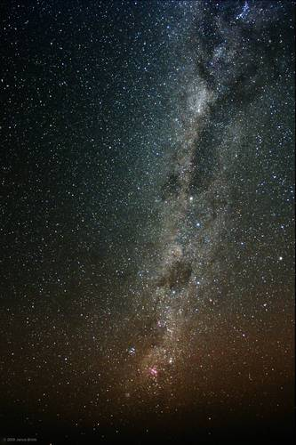<figcaption class="caption">Die Melkweg soos gesien vanaf Sutherland, Noord-Kaap, deur Janus Brink (SAAO/SALT).</figcaption></figure><p>Meteore (ook bekend as verskietende sterre) en komete speel ook 'n groot rol in sterreleer regoor die w&#234;reld. Meteore en komete word in die meeste kulture beskou as tekens van belangrike gebeure. In Tswana-sterreleer is 'n baie helder meteoor 'n voorteken van 'n goeie komende seisoen. Hierteenoor het die .Xu San gereken 'n meteoor is 'n bose gees wat oor die hemelruim jaag om kwaad te stook onder mense. Die /Xam San het gedink 'n meteoor is 'n voorbode van die dood van een van hul eie mense. In die Xhosa-sterreleer word 'n komeet, <em>Uzatshoba,</em> geassosieer met onheil, oorlo&#235; en dood. Daar was ook 'n vaste oortuiging dat komete die dood van 'n hoofman voorspel. Die Sotho's noem komete <em>naledi tsha mesela</em>, en die Zulu's noem dit <em>inkanyezi enomsile</em>, wat albei 'sterre met sterte'  beteken.</p>
<div class="activity" data-type="Activity"><h1 class="title">Skep jou eie legende</h1><div class="teachers-guide">
<p/>

<p>In hierdie aktiwiteit gaan leerders hul eie denkbeeldige konstellasies teken (die voorbeelde kan as inspiasie dien). Hulle maak dan 'n storie op oor elkeen se  konstellasie.</p>

<p/>
</div>
<p><strong>MATERIALE:</strong></p>
<ul data-class="ListBulleted"><li>prente van beroemde konstellasies vir inspirasie</li>
</ul><figure>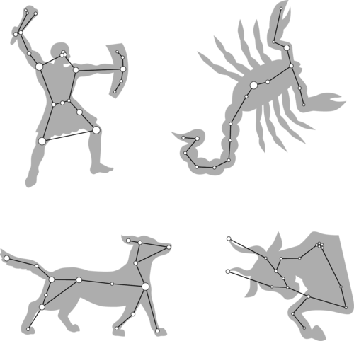<figcaption class="caption">Enkele voorbeelde van konstellasies in die hemelruim.</figcaption></figure><p><strong>INSTRUKSIES:</strong></p>
<ol data-class="ListEnumerated"><li>Skep jou eie sterpatroon en teken dit in die kassie hieronder.</li>
<li>Skep 'n legende (storie) oor jou nuwe konstellasie. </li>
</ol><p>Teken jou nuwe konstellasiepatroon in die kassie hieronder.</p>

<p><br/><br/><br/><br/><br/><br/><br/><br/><br/><br/><br/><br/></p>

<p>Skryf jou legende hier neer.</p>

<p/><hr/><hr/><hr/><hr/><hr/><hr/><hr/><hr/><hr/><hr/><hr/><hr/><hr/><hr/><hr/><p/>
</div>
<div class="note col-md-6" data-type="visit">
<p>Nuuskierig oor die heelal, maar weet nie waar om te begin nie? Kyk 'n bietjie na hierdie stapsgewyse gids wat van jou 'n indrukwekkende amateur-sterrekundige sal maak.<a data-class="ExternalLink" href="http://bit.ly/1aqKQHX">bit.ly/1aqKQHX</a></p>
</div></div><div class="section"><h2 class="title" id="toc-id-2">Moderne ontwikkelings</h2><div class="teachers-guide">
<p/>

<p>Di&#233; gedeelte lig noemenswaardige ontdekkings oor die aard van ons heelal, asook die tegnologie waarmee hierdie ontdekkings gemaak is, uit. Die inligting oor  moderne teleskope is  beperk, aangesien hierdie onderwerp in meer detail bespreek sal word in Graad 8: Planeet Aarde en die Ruimte, in die vertakking: <em>Vroe&#235; besigtiging van die ruimte en teleskope</em>. Bykomende aktiwiteite geskik vir hierdie afdeling, na gelang van toegang, sluit in besoeke aan wetenskapsentrums, wetenskapmuseums, planetariums, sterrewagte en amateur-sterrekundeklubs.</p>

<p/>
</div><div class="note col-md-6" data-type="newwords"><ul data-class="ListBulleted"><li>teleskoop</li>
<li>prograde</li>
<li>retrograde</li>
</ul></div><div class="note col-md-6" data-type="visit">
<p>Sterrekunde-tydlyn<a data-class="ExternalLink" href="http://bit.ly/1fGv8ML">bit.ly/1fGv8ML</a></p>
</div>
<p>Die vroegste sterrekundiges het nie gesofistikeerde sterrewagte gehad nie. Hulle het die sterre en planete net met die blote oog bestudeer. Die Majas van Suid-Amerika, antieke  Egiptenare en antieke Chinese het die vroegste <strong>sterrewagte</strong> gebou. Dit is spesiale geboue waarvandaan die sterre bestudeer is. Hierdie oeroue sterrewagte het nog nie teleskope gehad nie.</p>

<p>Deesdae bevat moderne sterrewagte groot teleskope met uiters sensitiewe kameras en instrumente wat op teleskope gemonteer is. Sterrekundiges gebruik rekenaars om die teleskope te verstel en die instrumente te hanteer. Soos die tegnologie vorder, sien ons al meer van die heelal en kom ons al hoe meer daaroor te wete.</p>
<div class="note col-md-6" data-type="didyouknow">
<p>X-straal-teleskope soos NASA se <em>Chandra</em> en die Europese Ruimteagentskap se <em>XMM-Newton</em> vang X-strale van voorwerpe op wat tot miljoene grade Celsius warm is. Hierdie teleskope is in die ruimte geplaas omdat ons atmosfeer al die  X-strale uit die ruimte absorbeer voor dit die Aarde bereik.</p>
</div><figure>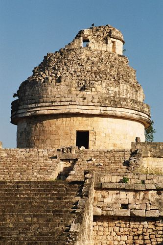<figcaption class="caption">Chichen-Itza Sterrewag in Mexiko. Hierdie antieke sterrewag is deur die Majas gebruik hoewel dit geen teleskope bevat het nie. </figcaption></figure><p>Suid-Afrika spog tans met die grootste optiese teleskoop in die Suidelike Halfrond, die Suider-Afrikaanse Groot Teleskoop (SALT). SALT is net buite Sutherland in die Karoo gele&#235;, waar die naghemel helder en baie donker is. SALT se hoofspie&#235;l is seshoekig, 11 x 9 meter in die dwarste, en bestaan uit 91 individuele kleiner spie&#235;ls wat inmekaar pas. Di&#233; spie&#235;l is so groot dat dit die lig kan opvang van uiters dowwe, veraf voorwerpe. SALT word gebruik om 'n verskeidenheid voorwerpe te bestudeer, waaronder astero&#239;ede, sterre en sterrestelsels.</p>
<div class="note col-md-6" data-type="visit">
<p>Die SALT-webtuiste.<a data-class="ExternalLink" href="http://bit.ly/18qWIui">bit.ly/18qWIui</a></p>
</div><figure><figcaption class="caption">Die Suider-Afrikaanse Groot Teleskoop (SALT).</figcaption></figure><figure><figcaption class="caption">SALT se groot spie&#235;l vang lig op van dowwe, veraf voorwerpe.</figcaption></figure><div class="note col-md-6" data-type="visit">
<p>SKA-video<a data-class="ExternalLink" href="http://www.youtube.com/watch?v=0mfXKXVWG1s&amp;feature=player_detailpage"/><a data-class="ExternalLink" href="http://bit.ly/16soWXD">bit.ly/16soWXD</a><a data-class="ExternalLink" href="http://www.youtube.com/watch?v=0mfXKXVWG1s&amp;feature=player_detailpage"/></p>
</div>
<p>Suid-Afrika gaan ook 'n deel van die SKA (Vierkantkilometeropstelling), die w&#234;reld se grootste radioteleskoop wat teen 2024 voltooi moet wees, huisves. SKA is ook in die Karoo  naby Carnavon gele&#235;, ver weg van groot dorpe en stede waar daar baie min radioversteurings is. Na voltooiing sal die teleskoopopstelling 50 maal meer sensitief wees as enige ander radioteleskoop tot op hede. Die opstelling sal 3000 radioskottels bevat, asook ander soorte radiodetektors.</p>
<div class="note col-md-6" data-type="didyouknow">
<p>Twee derdes van SKA word in Afrika (meestal in Suid-Afrika) gebou, terwyl die orige derde in Australi&#235; gebou word.</p>
</div><figure>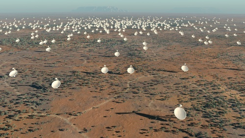<figcaption class="caption">'n Voorstelling van hoe SKA in die Karoo gaan lyk. </figcaption></figure><div class="note col-md-6" data-type="takenote">
<p>'n Opstelling beteken 'n groot aantal van dieselfde items. As al die lessenaars in die klaskamer byvoorbeeld netjies gerangskik is, kan ons dit 'n opstelling van lessenaars noem.</p>
</div>
<p>Sterrekundiges beoog om die reuse-teleskoop te gebruik om die gravitasiewette te toets met behulp van swartkolke. Hulle sal ook van die mees afgele&#235; gaswolke in die heelal, wat voor die eerste sterre gevorm het, bekyk. Sterrekundige wil ook bestudeer hoe sterrestelsels vorm en mettertyd verander, en miskien selfs lewe elders in die heelal ontdek.</p>
<div class="note col-md-6" data-type="visit">
<p>Vind meer uit oor SKA.<a data-class="ExternalLink" href="http://bit.ly/1eJ3JuG">bit.ly/1eJ3JuG</a></p>
</div><div class="note col-md-6" data-type="takenote">
<p>Swartkolke is superdigte streke in die ruimte met baie sterk gravitasie, so sterk dat selfs nie lig daaruit kan ontsnap nie.</p>
</div><div class="note col-md-6" data-type="visit">
<p>Lees meer oor swartkolke, oftewel "black holes".<a data-class="ExternalLink" href="http://bit.ly/15vM5HU">bit.ly/15vM5HU</a></p>
</div>
<p>Ons het nog soveel om te leer oor die heelal, aangesien ons net ongeveer 5% van die inhoud van ons heelal tans verstaan. SALT en SKA sal ons help om baie meer oor die heelal te wete te kom, want daar wag nog soveel wat ontdek moet word.</p>

<p>Kom ons kyk na enkele hoogtepunte van ons reis in wetenskaplike ontdekkings tot dusver.</p>
<div class="section"><h3 class="title" id="toc-id-3">Die ontdekking dat die Son, en nie die Aarde nie, die middelpunt van die sonnestelsel is</h3><div class="note col-md-6" data-type="visit">
<p>Geskiedenis van sterrekunde <a data-class="ExternalLink" href="http://bit.ly/15Vufw5">bit.ly/15Vufw5</a> en <a data-class="ExternalLink" href="http://bit.ly/16sp7Cf">bit.ly/16sp7Cf</a></p>
</div>
<p>Vroe&#235; sterrekundiges, soos die antieke Grieke, het gereken die Aarde is die middelpunt van die heelal, met die sterre en planete wat daaromheen wentel.</p>
<figure>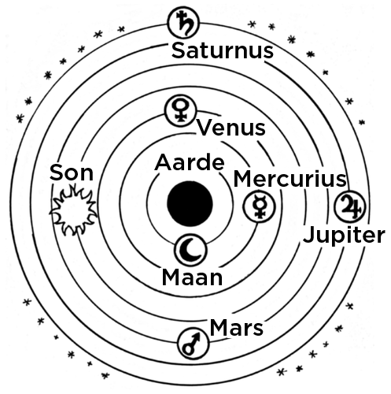<figcaption class="caption">Die antieke Grieke het gedink die Aarde is die middelpunt van die heelal en het geglo dat die planete, Son en agtergrondsterre alles om die Aarde wentel.</figcaption></figure><p>Deur die bewegings van die planete in die lug sorgvuldig waar te neem, het die Grieke besef dat die planete meestal van wes na oos oor die hemelruim beweeg met betrekking tot die sterre in die agtergrond. Maar soms het hulle van rigting verander en terugwaarts beweeg, van oos na wes met betrekking tot die agtergrondsterre. Die antieke Grieke se idees oor 'n aardegesentreerde heelal het gewerk wanneer die planete in dieselfde rigting as die sterre in die agtergrond beweeg het, maar kon nie hul retrograde (terugwaartse) beweging verklaar nie.</p>
<div class="note col-md-6" data-type="takenote">
<p>Beweging na die ooste word voorwaartse, direkte of <em>prograde</em> beweging genoem. Terugwaartse beweging noem ons <em>retrograde</em> beweging.</p>
</div>
<p>In 1543 het Nicolaus Copernicus, 'n Poolse wiskundige en sterrekundige, sy boek <em>De revolutionibus orbium coelestium</em> gepubliseer, wat vertaal kan word as <em>Oor die omwenteling van hemelliggame</em>. Daarin het hy korrek afgelei dat die Son, en nie die Aarde nie, die middelpunt van die sonnestelsel is. Hy het sy afleidings gegrond op talle van sy eie en ander mense se waarnemings. Copernicus het al die bekende planete van daardie tyd in toenemende afstand vanaf die Son gerangskik. In sy model was al die wentelbane van die planete rond, wat soortgelyk was aan die model van die antieke Grieke. Maar hoe het Copernicus se nuwe afleiding die probleem van Mars se terugwaartse beweging opgelos? Kom ons doen 'n aktiwiteit om te sien.</p>
<div class="note col-md-6" data-type="visit">
<p>Sewe beroemde sterrekundiges wat jy moet ken.<a data-class="ExternalLink" href="http://bit.ly/19HJLtb">bit.ly/19HJLtb</a></p>
</div><div class="activity" data-type="Activity"><h1 class="title">Verklaar die bewegings van Mars</h1><div class="teachers-guide">
<p/>

<p>In di&#233; aktiwiteit sal leerders ontdek hoe die retrograde (terugwaartse) beweging van Mars in 'n songesentreerde model van die sonnestelsel verklaar word.</p>

<p/>
</div>
<p><strong>MATERIALE:</strong></p>
<ul data-class="ListBulleted"><li>potlood/pen</li>
<li>liniaal</li>
</ul><figure>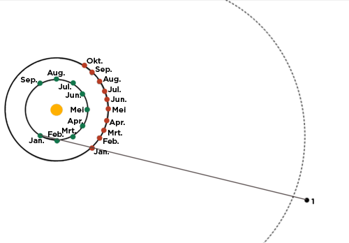<figcaption class="caption">Let daarop dat die binneste baan (groen) die Aarde s'n is en die buitenste (rooi) Mars s'n. Die stippellyn is die agtergrondsterre.</figcaption></figure><p><strong>INSTRUKSIES:</strong></p>
<ol data-class="ListEnumerated"><li>Trek 'n lyn vanaf elke Aarde-posisie deur die posisie van Mars vir dieselfde maand. Verleng die lyn ongeveer 1 cm verby die stippellyn-kromme, regs, wat die agtergrondsterre voorstel.</li>
<li>Plaas 'n kol aan die punt van die lyn en merk die kolle in volgorde. Indien 'n nuwe lyn een wat reeds getrek is, kruis, trek die nuwe lyn effens langer en plaas die kol effens verder weg as die kolle vir die ander lyne. Die lyn vir Januarie is reeds voltooi as 'n voorbeeld. Die kolle stel die posisies voor waar 'n waarnemer op Aarde Mars kan sien vir die maand soos aangedui op die diagram.</li>
<li>Begin by kol nommer 1, en verbind die kolle versigtig in volgorde. Di&#233; verbindingslyn stel die o&#235;nskynlike baan voor wat Mars deur die lug volg, soos dit vanaf die Aarde lyk.  </li>
<li>Beantwoord die vrae hieronder.</li>
</ol><p><strong>VRAE:</strong></p>
<div class="exercises"><div class="problemset"><div class="entry"><div class="problem">
            
<p/>

<p>Hoe beweeg Mars om die Son tussen Januarie en Augustus?</p>

          
<p/><hr/></div><div class="solution">
<p/><p/>

          
<p>Mars wentel links om die Son (anti-kloksgewys).</p>

          
<p/>
</div></div><div class="entry"><div class="problem">
            
<p/>

<p>Watter beweging ondergaan Mars in daardie tydperk volgens 'n waarnemer op Aarde?</p>

          
<p/><hr/><hr/></div><div class="solution">
<p/><p/>

          
<p>Mars beweeg o&#235;nskynlik aanvanklik linksom, dan lyk dit of dit omdraai en regsom (kloksgewys) beweeg voordat dit weer van rigting verander en lyk of dit linksom beweeg.</p>

          
<p/>
</div></div><div class="entry"><div class="problem">
            
<p/>

<p>In watter maande lyk dit asof Mars terugbeweeg in sy wentelbaan?</p>

          
<p/><hr/></div><div class="solution">
<p/><p/>

          
<p>In Mei, Junie en Julie.</p>

          
<p/>
</div></div><div class="entry"><div class="problem">
            
<p/>

<p>Kyk mooi wat gebeur met die Aarde en Mars in hul wentelbane wanneer Mars o&#235;nskynlik 'terugdraai'. Waarom lyk dit asof Mars agteruitbeweeg in sy wentelbaan?</p>

          
<p/><hr/><hr/></div><div class="solution">
<p/><p/>

          
<p>Die Aarde 'steek' Mars 'verby' in sy wentelbaan om die Son.</p>

          
<p/>
</div></div></div></div>

<p/>
</div>
<figure>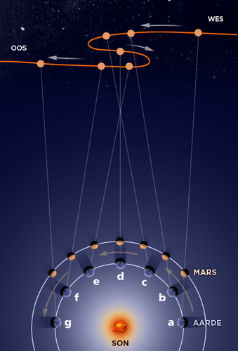<figcaption class="caption">Die Aarde beweeg vinniger as Mars in sy wentelbaan en haal Mars in by punt (b) voordat dit Mars by punt (d) verbysteek. Sodra die Aarde Mars verbysteek, lyk dit asof Mars terugbeweeg in die hemelruim, hoewel Mars nie regtig van rigting in die ruimte verander nie.</figcaption></figure><div class="note col-md-6" data-type="visit">
<p>Retrograde beweging van Mars.<a data-class="ExternalLink" href="http://bit.ly/1732x0x">bit.ly/1732x0</a></p>
</div>
<p>Hoe kan dit lyk asof dinge agteruitbeweeg wanneer dit nie die geval is nie? Kom ons kyk.  Strek jou arm voor jou uit en hou jou wysvinger regop. Sit iets oor jou linkeroog of hou dit toe en let op waar jou vinger is teen die agtergrond. Ruil nou jou o&#235; om met die regteroog toe. Wat let jy op omtrent die posisie van jou vinger? Dit het na regs beweeg, n&#232;? Maar het jy regtig jou vinger beweeg? Nee, dit lyk net asof dit beweeg het vanwe&#235; die verandering in jou perspektief.</p>
<div class="note col-md-6" data-type="didyouknow">
<p>Die idee van 'n songesentreerde sonnestelsel is reeds so vroeg as 200 v.C. gesuggereer deur Aristarchos van Samos (Samos is 'n eiland langs die kus van Turkye). Tog het di&#233; idee nie lank stand gehou nie omdat die beroemde Griek Aristoteles nie gedink het die Son is die middelpunt van ons sonnestelsel nie.</p>
</div></div><div class="section"><h3 class="title" id="toc-id-4">Die ontdekking dat die planete se wentelbane ellipse is </h3><div class="teachers-guide">
<p/>

<p>Maak seker leerders is vertroud met die term ellips voordat jy di&#233; afdeling begin. Indien nodig, hersien die eienskappe van ellipse in vyf minute voordat jy voortgaan.</p>

<p/>
</div>
<p>Johannes Kepler was 'n Duitse sterrekundige en wiskundige. Dit het hom tien jaar gevat om die beweging van Mars oor die hemelruim in detail te probeer uitl&#234;. Hy kon slegs sy model van die sonnestelsel met die waargenome beweging van die planete laat ooreenstem indien hy aanvaar het dat planete, eerder as om in 'n sirkel om die Son te beweeg, elliptiese (ovaal) bane het. Hy het dus ontdek dat die ware vorm van die planete se bane ellipties is.</p>
<figure>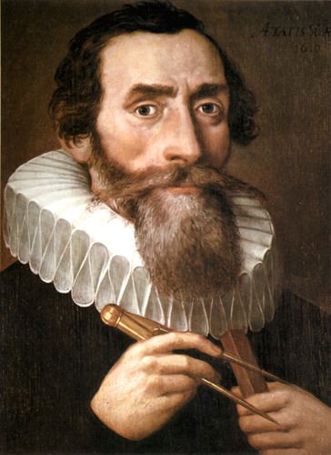<figcaption class="caption">Johannes Kepler.</figcaption></figure><p>Die Aarde beweeg vinniger in sy elliptiese baan as dit nader aan die Son is as wanneer dit verder weg is. Dit is omdat die aantrekkingskrag van gravitasie tussen die Aarde en die Son sterker is indien die afstand tussen hulle kleiner is. Dit geld vir die wentelbane van al die planete om die Son.</p>
<figure>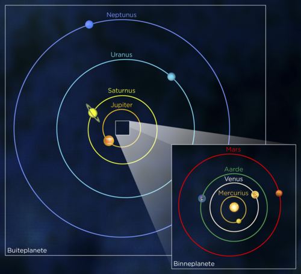<figcaption class="caption">Die Aarde en ander planete in ons sonnestelsel wentel om die Son in 'n ellips. </figcaption></figure></div><div class="section"><h3 class="title" id="toc-id-5">Galileo se ontdekkings met sy teleskoop</h3>
<p>Galileo Galilei was 'n Italiaanse fisikus, wiskundige en sterrekundige. Hy het sy eerste teleskoop in 1609 gebou en was ook die eerste sterrekundige om 'n teleskoop te gebruik. In 1610 het hy 'n boek gepubliseer onder die titel <em>Die boodskapper van die sterre</em>, waarin die ontdekkings wat hy met sy teleskoop gemaak het, gelys is.</p>
<figure>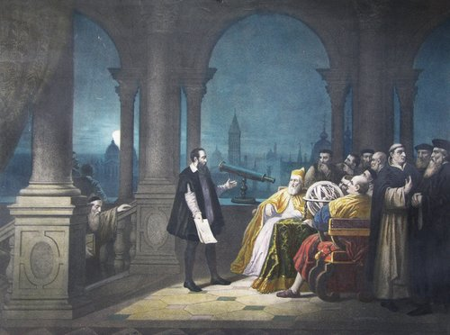<figcaption class="caption">Galileo met sy teleskoop.</figcaption></figure><p>Galileo het Jupiter se vier groot mane ontdek (dit word ook die mane van Galilei genoem). Nadat hy hulle verskeie nagte lank bestudeer het, het hy besef dat hulle inderdaad om Jupiter wentel.</p>
<figure><figcaption class="caption">Die vier grootste mane van Jupiter, van links na regs in toenemende afstand vanaf Jupiter: Io, Europa, Ganymede en Callisto.</figcaption></figure><p>Hy het ook ontdek dat Venus, net soos die Maan en al die ander planete, fases het. Hy het kraters op die Maan ontdek en gesien dat die Son donker kolle, genaamd sonvlekke, het. Hierdie onvolmaakthede van die Maan en Son het die opvatting van die Katolieke Kerk van die tyd dat die hemel volmaak en onveranderlik is, bevraagteken.</p>

<p>Die Katolieke Kerk het Galileo toegelaat om navorsing te doen solank hy nie sy bevindings bekend gemaak het nie. Dus was die hoof van die Katolieke Kerk (die Pous) baie kwaad toe Galileo in 1632 'n boek gepubliseer het waarin hy ges&#234; het die Aarde beweeg om die Son. Hy is verhoor en skuldig bevind aan kettery. N&#225; 'n tyd in die tronk is hy onder huisarres geplaas.</p>
<div class="note col-md-6" data-type="takenote">
<p>Kettery is om 'n opvatting of geloof te huldig wat in stryd is met die amptelike lering van die kerk van die tyd.</p>
</div><div class="note col-md-6" data-type="takenote">
<p>Hoewel Galileo nie in sy leeftyd ge&#235;er is nie, was sy eksperimentele en wiskundige benadering tot fisika revolusion&#234;r en ver voor sy tyd.</p>
</div></div><div class="section"><h3 class="title" id="toc-id-6">Newton ontdek gravitasie (swaartekrag)</h3>
<p>Isaac Newton was 'n Engelse fisikus en wiskundige en word beskou as een van die grootste wetenskaplikes van alle tye. Hy het wiskundige wette geformuleer wat die bewegings van voorwerpe beskryf, maar sy grootste ontdekking was gravitasie (swaartekrag). In 1687 het hy 'n boek gepubliseer genaamd <em>Philosophae Naturalis Principia Mathematica</em>, of in Afrikaans: <em>Wiskundige beginsels van Natuurfilosofie</em> waarin  hy sy idees oor die bewegings van voorwerpe en gravitasie beskryf het.</p>

<p>Daar is 'n beroemde storie dat Newton onder 'n appelboom gesit het en 'n appel op sy kop geval het. Dit het hom aan die dink gesit oor vallende voorwerpe en gravitasie. Die appel het nie regtig op sy kop geval nie, maar hy het tog appels sien val en begin wonder hoekom dit altyd afval. Dit het hom laat dink dit is gravitasie wat appels laat val.</p>
<div class="note col-md-6" data-type="visit">
<p>Leer meer oor gravitasie en algemene relatiwiteit (video)<a data-class="ExternalLink" href="http://www.youtube.com/watch?feature=player_embedded&amp;v=0rocNtnD-yI"/><a data-class="ExternalLink" href="http://bit.ly/1fpDg6L">bit.ly/1fpDg6L</a></p>
</div>
<p>Dit het hom 'n verstommende verstandsprong laat maak van die Aarde na die ruimte sodat hy besef het dit is inderdaad gravitasie wat die Maan in sy wentelbaan om die Aarde vashou. Volgens Newton is dit gravitasie wat dinge laat grond toe val en wat meebring dat die planete om die Son wentel en mane om planete. Newton was die eerste persoon wat kon verduidelik wat die Maan en die planete in hul wentelbane hou.</p>
<figure><figcaption class="caption">Sir Isaac Newton op ouderdom 46.</figcaption></figure><div class="note col-md-6" data-type="didyouknow">
<p>Enkele beroemde aanhalings van  sir Isaac Newton: "Ek kan die bewegings van hemelliggame verklaar, maar nie mense se mallighede nie." "Plato is my vriend - Aristoteles is my vriend - maar my grootste vriend is die waarheid."</p>
</div><div class="activity" data-type="Activity"><h1 class="title">Onderhoud met 'n revolusion&#234;r</h1><div class="teachers-guide">
<p/>

<p>In hierdie aktiwiteit gaan leerders rolspel in pare doen. Een leerder moet voorgee om 'n belangrike vroe&#235; sterrekundige te wees, terwyl die ander een die rol van 'n joernalis vertolk. Die 'joernalis' moet dan met die 'sterrekundige' 'n onderhoud voer om vas te stel watter belangrike ontdekkings die sterrekundige gemaak het. Jy kan ook die joernaliste vra om verslag te doen aan die klas oor hul bevindings. Indien daar genoeg tyd is, kan die leerders rolle omruil sodat elke paar twee onderhoude voer (met twee verskillende sterrekundiges). As jy dit ook vir skriftelike werk wil gebruik, kan die 'joernaliste' gevra word om 'n koerantartikel te skryf waarin hulle verslag doen oor die sterrekundige se ontdekkings.</p>

<p/>
</div>
<p><strong>MATERIALE:</strong></p>
<ul data-class="ListBulleted"><li>navorsingsmateriaal oor beroemde geskiedkundige sterrekundiges.</li>
</ul><p><strong>INSTRUKSIES:</strong></p>
<ol data-class="ListEnumerated"><li>Werk in pare vir hierdie aktiwiteit. Een van julle speel die rol van 'n beroemde vroe&#235; sterrekundige en die ander een is 'n joernalis.</li>
<li>Sterrekundige: Kies watter beroemde sterrekundige jy wil wees en beantwoord die vrae wat jou maat stel.</li>
<li>Joernalis: Vra die 'sterrekundige' wat hy/sy ontdek het en waarom di&#233; ontdekkings belangrik is.</li>
</ol><p/>
</div></div><div class="section"><h3 class="title" id="toc-id-7">Eietydse ontdekkings</h3>
<p>Wetenskaplikes maak voortdurend nuwe ontdekkings, en met elke nuwe ontdekking duik daar 'n nuwe vraag op.</p>
<div class="note col-md-6" data-type="visit">
<p>'n Kort dokument&#234;r oor die soektog na bewoonbare planete.<a data-class="ExternalLink" href="http://bit.ly/1fpDqei">bit.ly/1fpDqei</a></p>
</div><div class="activity" data-type="Activity"><h1 class="title">Doen navorsing oor 'n nuwe ontdekking, uitvinding of wetenskaplike</h1><div class="teachers-guide">
<p/>

<p>In di&#233; aktiwiteit moet leerders navorsing doen en dan 'n opsomming maak waarin hulle 'n nuwe ontdekking of uitvinding in sterrekunde beskryf, of vertel van enige interessante sterrekundige. Hulle kan die voorbeeldmateriaal in hierdie hoofstuk gebruik, of aanlyn-navorsing doen, of die plaaslike of skoolbiblioteek gebruik. Besluit hoe leerders die inligting moet aanbied, hetsy as 'n navorsingsprojek, mondelinge aanbieding of 'n plakkaat.</p>

<p/>
</div>
<p><strong>INSTRUKSIES:</strong></p>
<ol data-class="ListEnumerated"><li>Doen navorsing oor 'n onlangse ontdekking in die sterrekunde &#243;f 'n uitvinding wat in sterrekunde gebruik word &#243;f 'n beroemde sterrekundige.</li>
<li>Dit is jou keuse of jy oor een van die voorbeelde in die teks hieronder gaan skryf, of jou eie voorbeeld wil gebruik. </li>
<li>Die onderwyser sal s&#234; hoe jy die werk moet aanbied.</li>
</ol><p>Enkele voorbeelde van ontdekkings:</p>

<p><strong>Eksoplanete - </strong> 'n Eksoplaneet is 'n planeet wat om 'n ster wat nie ons eie Son is nie, wentel. Die eerste eksoplaneet is in 1992 ontdek toe gesien is hoe verskeie planete om 'n klein, vinnig draaiende ster wentel. Teen Junie 2013 is 890 eksoplanete reeds ontdek en daar word voortdurend nog opgespoor.</p>
<figure>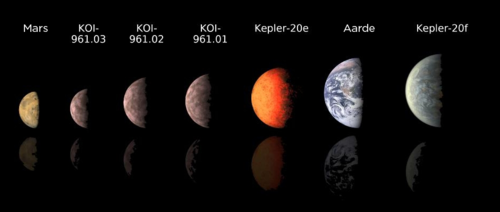<figcaption class="caption">Di&#233; illustrasie vergelyk die kleinste bekende eksoplanete buite ons sonnestelsel met ons eie planete Mars en die Aarde.  </figcaption></figure><div class="note col-md-6" data-type="visit">
<p>Planet Quest - die soeke na nog 'n Aarde.<a data-class="ExternalLink" href="http://bit.ly/1be0oDn">bit.ly/1be0oDn</a></p>
</div><div class="note col-md-6" data-type="visit">
<p>Citizen science - help soek na ander planete.<a data-class="ExternalLink" href="http://bit.ly/1dL91Tt">bit.ly/1dL91Tt</a></p>
</div>
<p><strong>Swartkolke -</strong> Swartkolke is superdigte streke in die ruimte met uiters sterk gravitasie, so sterk dat nie eens lig daaruit kan ontsnap nie. Hoewel swartkolke nie sigbaar is nie, weet sterrekundiges hulle bestaan vanwe&#235; hul  aantrekkingskrag op enige voorwerp naby hulle. Indien jy voete eerste in 'n swartkolk sou val, sal jy uitmekaar getrek word soos 'n spaghetti-wurmpie.</p>
<figure>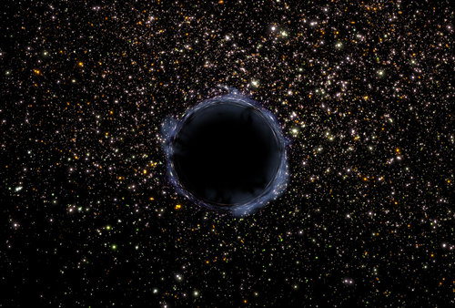<figcaption class="caption">'n Swartkolk in die heelal.</figcaption></figure><figure>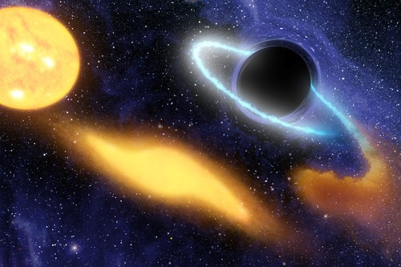<figcaption class="caption">Di&#233; kunstenaarsvoorstelling toon hoe 'n massiewe swartkolk 'n ster mettertyd uitmekaar pluk. Aan die linkerkant kom die geel, sonagtige ster te naby aan die swartkolk en word uitgerek (middelste geel kol) tot dit uitmekaar geruk word. Van die oorblyfsels van die ster warrel in die swartkolk af (blouwit wasige ring regs).</figcaption></figure><div class="note col-md-6" data-type="visit">
<p>Kyk hoe 'n swartkolk 'n ster insluk.<a data-class="ExternalLink" href="http://bit.ly/1aqMrOa">bit.ly/1aqMrOa</a></p>
</div>
<p><strong>Die uitdyende heelal - </strong>In 1929 het die sterrekundige Edwin Hubble die verstommende ontdekking gemaak dat ons heelal aan die uitdy is. Waar hy sterrestelsels buite ons Melkweg bestudeer het, het hy ontdek dat al die sterrestelsels wat hy bekyk het aan die wegbeweeg was van die Aarde, en dat di&#233; wat die verste weg was, die vinnigste beweeg het. Dit impliseer dat elke sterrestelsel wegbeweeg van elke ander sterrestelsel. Trouens, die ruimte tussen sterrestelsels dy self uit.</p>
<div class="note col-md-6" data-type="takenote">
<p>'n Sterrestelsel is 'n groep sterre wat deur hul gravitasie-aantrekking bymekaar gehou word, soos ons sterrestelsel, die Melkweg. Ons leer volgende jaar in Gr 8 meer oor sterrestelsels.</p>
</div><figure>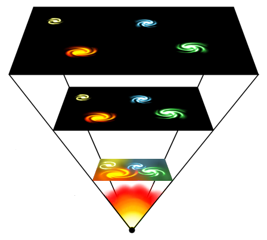<figcaption class="caption">Soos die heelal uitdy, beweeg sterrestelsels al verder uitmekaar.</figcaption></figure><p/>
</div>
<div class="note col-md-6" data-type="visit">
<p>Heelal bewustheid.<a data-class="ExternalLink" href="http://bit.ly/16Bs24C">bit.ly/16Bs24C</a></p>
</div><div class="activity" data-type="Activity"><h1 class="title">Eietydse sterrekundiges en fisici</h1>
<p><strong>INSTRUKSIES:</strong></p>

<p>Kyk na die foto's hieronder en pas die gesig by die beskrywing van die persoon.</p>
<figure id="gd-idp10558624">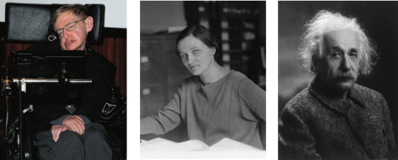</figure><p/><hr/><div class="teachers-guide">
<p/>

<p>Stephen Hawking, Cecilia Payne-Gaposchkin, Albert Einstein.</p>

<p/>
</div>
<p><strong>Beskrywings:</strong></p>

<p>Stephen Hawking, 'n beroemde Britse fisikus, is kort na sy 21ste verjaardag gediagnoseer met ALS, 'n vorm van motorneuronsiekte. Hy is veral beroemd vir sy werk oor swartkolke.</p>

<p>Cecilia Payne-Gaposchkin, die sterrekundige wat ontdek het dat sterre hoofsaaklik uit waterstof en helium bestaan.</p>

<p>Albert Einstein, 'n Duitse fisikus beroemd vir sy werk oor gravitasie en die aard van ruimte en tyd.</p>

<p/>
</div>
<div class="note col-md-6" data-type="visit">
<p>The final frontier for Humans.<a data-class="ExternalLink" href="http://bit.ly/16Bs3pk">bit.ly/16Bs3pk</a></p>
</div><div class="note col-md-6" data-type="visit">
<p>Die konsepkaarte in jul werkboeke is geskep met 'n oopbronprogram. Jy kan dit met hierdie skakel aflaai indien jy dit wil gebruik om jou eie konsepkaarte vir ander vakke te skep.  <a data-class="ExternalLink" href="http://bit.ly/16spQTO">bit.ly/16spQTO</a></p>
</div></div></div><div class="section"><h2 class="title" id="toc-id-8">Opsomming</h2>
<div class="note col-md-10" data-type="keyconcepts"><ul data-class="ListBulleted"><li>Mense hou al duisende jare lank die sterre dop. Hulle het stories geskep oor die sterre en konstellasies, wat van een geslag na die volgende oorgedra is. </li>
<li>Die vroegste wetenskaplikes het geglo die Aarde is die middelpunt van die sonnestelsel.</li>
<li>Copernicus het bevind dat die waargenome planet&#234;re bewegings makliker verklaar kon word indien die Son die middelpunt van die sonnestelsel was.</li>
<li>Galileo was die eerste sterrekundige wat 'n teleskoop gebruik het, en hy het ontdek dat daar mane om Jupiter wentel.</li>
<li>Newton het gravitasie, oftewel swaartekrag, ontdek en ges&#234; dat planete en mane deur gravitasiekrag in hul wentelbane gehou word.</li>
<li>Nuwe ontdekkings word voortdurend gemaak met moderne teleskope.</li>
</ul></div>
<p><strong>Konsepkaart</strong></p>

<p>Die hele jaar reeds kyk ons n&#225; elke hoofstuk  hoe om konsepkaarte op te stel. Nou is dit jou beurt om jou eie konsepkaart te maak. Die konsepte in hierdie hoofstuk oor die ontwikkeling van sterrekunde kan maklik in twee hooftemas verdeel word. Eerstens is daar 'vroe&#235; inheemse kennis' en dan 'moderne ontwikkelings' weens ontdekkings wat mense gemaak het en steeds maak. Ons het die konsepkaart vir jou begin. Kopieer dit in jou notaboek om te oefen hoe om 'n konsepkaart te teken. Sodra jy, met die onderwyser se hulp, jou finale weergawe het, kan jy dit in die ruimte hieronder teken as opsomming van hierdie hoofstuk.</p>

<p/>
<figure id="gd-idp1872672">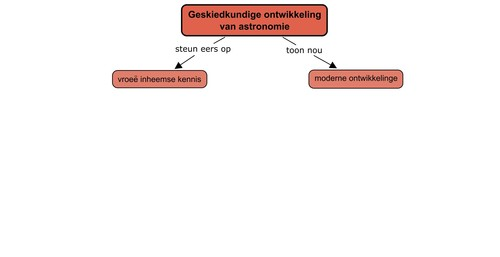</figure><div class="teachers-guide">
<p/>

<p>Dit is die eerste keer dat die leerders die grootste deel van 'n konsepkaart op hul eie moet doen. Hoewel ons regdeur die jaar n&#225; elke hoofstuk konsepkaarte bestudeer en voltooi het, is dit nogal 'n moeilike vaardigheid om te bemeester. Jy sal die leerders deur di&#233; proses moet lei. Dit is belangrik om hierdie laaste konsepkaart saam met jou leerders te doen aangesien dit help met die ontwikkeling van 'n vaardigheid wat baie handig in die ho&#235;rskool gaan wees. Onthou, <strong>leerders moet leer hoe om te leer.</strong></p>

<p>Ons verskaf wel 'n voltooide konsepkaart om na te verwys wanneer jy hierdie proses met die leerders deurgaan. Moedig leerders aan om eers 'n konsep op los papier of in hul notaboeke te maak. Stap in die klaskamer rond om te help waar nodig en hulle deur die proses te lei. Byvoorbeeld, vir die ontwikkeling van 'vroe&#235; inheemse kennis' vra vrae soos:</p>
<ul data-class="ListBulleted"><li>
<p><em>Waar</em> het hierdie vroe&#235; inheemse kennis vandaan gekom? (van <strong>mense</strong>)</p>
</li>
<li>
<p><em>Hoe</em> het dit gebeur? (deur <strong> waarneming van patrone </strong>in die beweging van die <strong>sterre, Maan en Son</strong>)</p>
</li>
<li>
<p><em>Waarvoor</em> het hulle die patrone gebruik? (om <strong>kalenders te ontwikkel, tyd te meet, rigting te bepaal</strong>, ens.)</p>
</li>
</ul><p>Hou ook in gedagte dat dit 'n subjektiewe ding is om 'n konsepkaart op te stel - verskillende leerders sal die inhoud op verskillende maniere voorstel, en dit moet aangemoedig en ni&#233; gepenaliseer word nie. As elke leerder sy/haar eie konsepkaart opgestel het, kan dit as 'n klasaktiwiteit op die skryfbord voortgesit word. Vra hul insette oor wat die volgende "borrel" moet bevat, en hoekom.</p>

<p>As leerders sukkel met hierdie taak, kan jy die voorbeeld-konsepkaart wat hier gegee word, gebruik om hulle deur die proses te lei en steeds dieselfde vrae soos hierbo vra. Eers as almal tevrede is met die konsepkaart, kan leerders dit in hul eie boeke oorteken. <strong>Moet asseblief nie bloot die konsepkaart hieronder op die skryfbord oorteken en vir leerders aans&#234; om dit in hul werkboeke te kopieer nie.</strong> Hulle (en jy as onderwyser) moet die proses saam deurwerk totdat die leersiklus vir die opstel van konsepkaarte voltooi is.</p>

<p>Onderwyser se weergawe:</p>
<figure id="gd-idm552816">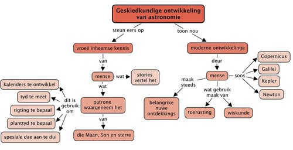</figure><p/>
</div><div class="activity" data-type="Revision">
<h1 class="title">Hersieningsvrae</h1>
<p/>
<div class="exercises"><div class="problemset"><div class="entry"><div class="problem">Watter bewegings kon die antieke Griekse model van die sonnestelsel ni&#233; verklaar nie? [2 punte]
<p/>

<p/><hr/><hr/><hr/><hr/></div><div class="solution">
<p/><p/>

        
<p>Die antieke Griekse model kon nie die bewegings van die planete volledig verklaar nie. Dit het gewerk vir die voorwaartse of prograde bewegings, maar kon nie die terugwaartse of retrograde bewegings waar dit gelyk het asof die planete agtertoe beweeg met betrekking tot  die agtergrondsterre, verklaar nie.</p>

        
<p/>
</div></div><div class="entry"><div class="problem">
          
<p/>

<p>Hoe het Copernicus se model van die sonnestelsel verskil van die antieke Griekse model van die sonnestelsel, en hoe het dit ooreengestem? [2 punte]</p>

        
<p/><hr/><hr/><hr/><hr/><hr/></div><div class="solution">
<p/><p/>

        
<p>Copernicus se model het ooreengestem in di&#233; opsig dat hy aanvaar het die planete wentel in 'n sirkel. Dit het egter verskil in di&#233; opsig dat dit korrek was om te aanvaar dat die Son die middelpunt van die sonnestelsel is, eerder as die Aarde. In Copernicus se model het al die planete, waaronder die Aarde, om die Son gewentel. In die antieke Griekse model het die ander planete en die Son om die Aarde gewentel.</p>

        
<p/>
</div></div><div class="entry"><div class="problem">
          
<p/>

<p>Verduidelik in jou eie woorde waarom dit soms lyk asof Mars agtertoe beweeg met betrekking tot die beweging van die agtergrondsterre? [3 punte]</p>

        
<p/><hr/><hr/><hr/><hr/><hr/></div><div class="solution">
<p/><p/>

        
<p>Planete beweeg in 'n direkte (ooswaartse) rigting om die Son. Die Aarde wentel vinniger om die Son as wat Mars sy wentelbaan voltooi. Aangesien die Aarde vinniger beweeg, haal dit die stadiger Mars in. Wanneer die Aarde vir Mars verbysteek, lyk dit asof Mars agtertoe beweeg in vergelyking met sy gewone beweging deur die hemelruim. In hierdie retrograde beweging beweeg n&#243;g die Aarde n&#243;g Mars agteruit; dit l&#253;k net so.</p>

        
<p/>
</div></div><div class="entry"><div class="problem">
          
<p/>

<p>Lys twee verskillende ontdekkings wat Galileo met behulp van sy teleskoop gemaak het. [2 punte]</p>

        
<p/><hr/><hr/></div><div class="solution">
<p/><p/>

        
<p>Jupiter se mane van Galilei, kraters op die Maan, sonvlekke op die Son en die fases van Venus.</p>

        
<p/>
</div></div><div class="entry"><div class="problem">
          
<p/>

<p>Beweeg planete in ronde sirkels of ovaal ellipse om die Son? [1 punt]</p>

        
<p/><hr/></div><div class="solution">
<p/><p/>

        
<p>Planete wentel in 'n elliptiese baan om die Son.</p>

        
<p/>
</div></div><div class="entry"><div class="problem">
<p>Hoe wissel die spoed van 'n planeet soos dit om die Son beweeg? [2 punte]</p>
 
<p/><hr/><hr/></div><div class="solution">
<p/><p/>

        
<p>'n Planeet beweeg al vinniger in sy wentelbaan hoe nader dit aan die Son kom, en beweeg weer stadiger as dit verder weg is.</p>

        
<p/>
</div></div><div class="entry"><div class="problem">
          
<p/>

<p>Vir watter praktiese gebruike het vroe&#235;re kulture die sterre aangewend? [2 punte]</p>

        
<p/><hr/><hr/><hr/></div><div class="solution">
<p/><p/>

        
<p>Die sterre is gebruik om rigting te bepaal en tred te hou met tyd. Sterre het spesiale feesdae aangedui en was ook 'n teken vir boere wanneer om te plant en te saai.</p>

        
<p/>
</div></div><div class="entry"><div class="problem">
          
<p/>

<p>Hoe het die vroe&#235; San die Melkweg verduidelik? [2 punte]</p>

        
<p/><hr/><hr/></div><div class="solution">
<p/><p/>

        
<p>In die sterreleer van die San is die Melkweg geskep deur 'n meisie wat 'n handvol as uit 'n vuur geskep en in die lug opgegooi het.</p>

        
<p/>
</div></div><div class="entry"><div class="problem">
          
<p/>

<p>Het die fases van die Maan 'n uitwerking op menslike gedrag? [1 punt]</p>

        
<p/><hr/></div><div class="solution">
<p/><p/>

        
<p>Nee, die opvatting dat die Maan mense se gedrag be&#239;nvloed, is 'n stadslegende.</p>

        
<p/>
</div></div></div></div>

<p>Totaal [17 punte]</p>

<p/>
</div></div></div>
      </div></div>